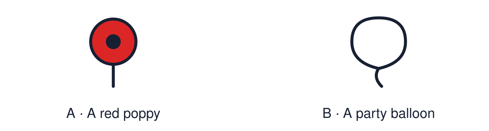

Arrival choices
Previous lesson reminder:

Start with 1 and 2. Try 3 and 4 when ready. Reading and exact scribing are available.
1 Is making a rangoli-style pattern in class worship?
Support: Use the reminder strip or talk it through with an adult.
2 Which meaning fits hope?
Support: Choose: Believing that something good can happen OR Taking time to remember people and events.
3 What does the red poppy stand for?
Support: Use the model evidence anchor A or read one relevant card together.
4 Is silence the only way to remember?
Support: Give a reason when ready.
Stretch: use a precise example or explain which detail supports your answer.
Evidence cards
Read, point or listen. Keep the source label with any detail you use.
A The poppy
In the UK many people wear a red poppy in November. The Royal British Legion describes it as a symbol of remembrance and of hope for a peaceful future.
Source: Authored summary; see Royal British Legion, The poppy
Limit: Wearing a poppy is a personal choice. People have different views about it.
B Two minutes of silence
On 11 November at 11 o’clock many people stop for two minutes of silence to remember people who died in wars.
Source: Authored summary of UK Remembrance practice
Limit: Silence is one way to remember. A quiet alternative is always available.
C A light in the window
Many people light a candle or lamp to remember someone or to show hope. Light in the dark can stand for hope.
Source: Authored classroom resource
Limit: A symbol can mean different things to different people.
D A memorial
A memorial can be a stone, a garden, a bench or a list of names. It gives people a place to remember.
Source: Authored classroom resource
Limit: Memorials remember different people and events.
Shared investigation
1. Sort each symbol: hope, remembrance or both.
2. Explain how a symbol can carry meaning.
Work with a partner or adult, or use your own table. One person suggests; the other checks the evidence. Swap after one turn. Passing is allowed.
Move or match the cards
| Cards to use |
|---|
| A red poppy |
| A list of names on a stone |
| A candle lit in the dark |
Possible labels: Both / Hope / Remembrance
Support: Show two choices. Read one short instruction. Point, match or say a word, then add a reason when ready.
Further challenge: Explain how one symbol can stand for both remembering and hoping.
Supported independent task
Complete this route only. Reflect on one way light or remembrance can represent hope.
1. Choose one symbol card: light, flower or memorial.
2. Draw or colour your own version.
3. Add one word: hope or remember.
Support: Show two choices. Read one short instruction. Point, match or say a word, then add a reason when ready. Complete the organiser one space at a time. Hope can be shown by ___ because ___.
An adult may read or scribe your exact response. They should not choose the answer.
Standard independent task
Complete this route only. Reflect on one way light or remembrance can represent hope.
1. Create a hope or remembrance symbol.
2. Add one word or a short explanation.
3. Finish the sentence: Hope can be shown by ___.
Support: Hope can be shown by ___ because ___.
Check the required evidence and revise one detail.
Stretch independent task
Complete this route only. Reflect on one way light or remembrance can represent hope.
1. Create a symbol that shows both hope and remembrance.
2. Write a short explanation of each meaning.
3. Explain why symbols help people remember together.
Support: Choose the evidence independently. Use the frame only if it helps.
Explain how one symbol can stand for both remembering and hoping.
Exit ticket
Choose a response mode. You may give your answers privately to an adult.
What does the red poppy stand for?
Is silence the only way to remember?
Support: Hope can be shown by ___ because ___.
Further challenge: Explain how one symbol can stand for both remembering and hoping.